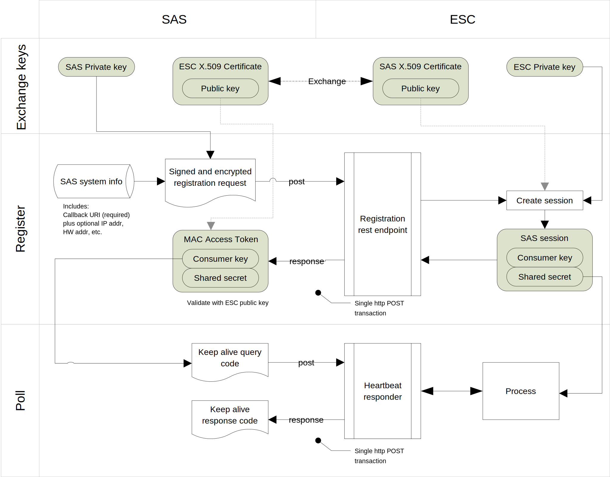

Payload Data for Keep Alive Message

Keep Alive Indication
Keep Alive Indication shall be sent from the SAS to ESC. The Keep Alive Request shall be generated by encoding the MessageContainer object in which the KeepAlive object is used to generate encodedPayloadData field.in the following table using JSON.
Table 12: KeepAlive object
| Field | Type | R/O/C | Descriptions |
|---|---|---|---|
| sasRegistrationId | string | Required | This field shall be included to indicate the registration identifier of the SAS. |
Keep Alive Confirm
Keep Alive Confirm shall be sent from the ESC to the SAS for the response to the Keep Alive Request. The Keep Alive Response shall be generated by encoding the MessageContainer object in which empty JSON object (i.e.{}) is used to generate encodedPayloadData field.